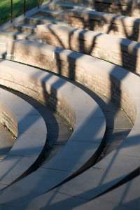

My Beautiful Sample Page
New features in CSS3 and HTML5 allow web developers to build increasingly elegant websites using very clean and semantic markup. It offers them exciting features like localStorage, and using advanced CSS3 techniques to style it all. Sadly, it isn't quite as simple as that; the many different levels of support for all these features across the entire browser landscape has given many developers a headache. Since aspirin can't be distributed via https, alternative solutions had to be created. One such solution is Modernizr, a library that detects the availability of features in the current browser and makes that information available to the web developer.
Modernizr
Modernizr is an open source JavaScript library that aims to make the process of using the latest and greatest technologies on the web a little easier. With Modernizr, you can target CSS and JavaScript specifically based on each feature the current browser supports.
Here is a list of the features Modernizr detects:
- applicationCache
- border-image:
- border-radius:
- box-shadow:
- Canvas
- Canvas Text
- CSS 2D Transforms
- CSS 3D Transforms
- CSS Animations
- CSS Columns
- CSS Gradients
- CSS Reflections
- CSS Transitions
- @font-face
- Geolocation API
- hsla()
- HTML5 Audio
- HTML5 Video
- Input Attributes
- Input Types
- localStorage
- Multiple backgrounds
- opacity:
- rgba()
- sessionStorage
- Web Workers